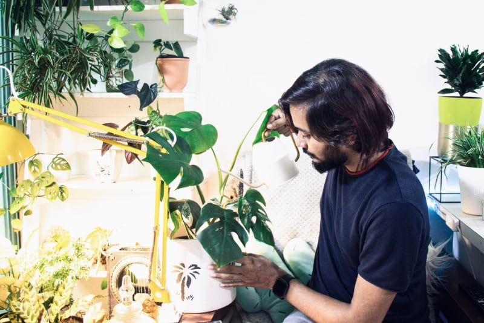

Houseplant Care 101
Houseplants are the best way to bring nature into your home, they’re visually stunning and
create
a calm space. Best of all, when selected correctly for each room they can cleanse your air and
increase oxygen.
Join us to learn about the best plants to get started with, where to keep them, and the right
watering and feeding regimes to make your new plants thrive. We’ll have easy-to-care-for plants
available for purchase on the evening.